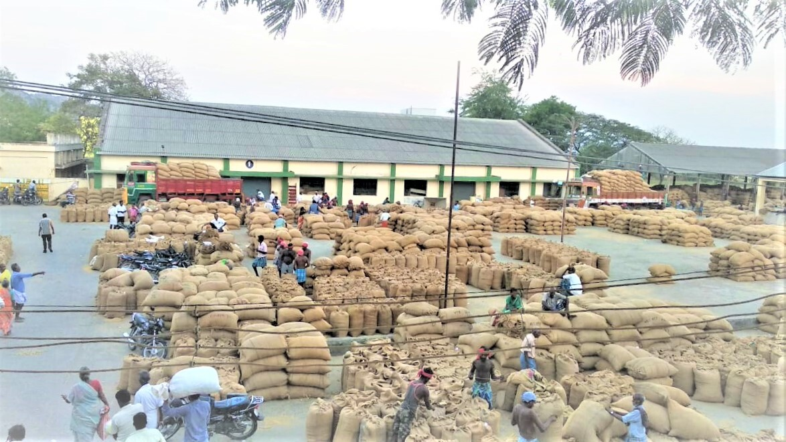

Welcome to Department of Agriculture Marketing
The Department of Agricultural Marketing, Tamil Nadu, has been functioning successfully since 1977, with prime objective of Regulating the Marketing of Agricultural produce thereby enriching the lives of the farmers through remunerative price realisations as well as supplying people with quality produce for a healthier life.
It has meticulously transfigured since 2001 as Department of Agricultural Marketing and Agri. Business focussing on other activities like Agri Export, Post-Harvest Management, Food Processing, and Agricultural Marketing developmental activities in the wake of the liberalization of the economic policy of the country.

Department Activities
- Establishment and maintenance of regulated markets in order to facilitate buying and selling of agricultural produce...
- Establishment and maintenance of Uzhavar Santhaigal for the benefit of farmers as well as consumers.
- To create marketing opportunities for small and marginal farmers...
- To create awareness among the farmers about the benefits of marketing their produce...
- Commercial grading of agricultural produce in the regulated markets and at farm holdings to help the producers to get remunerative price for their produce..
- To take up Agmark grading of agricultural, animal husbandry and forestry products for the benefit of the consumers. Setting up ofSupply Chain Management for Fruits, Vegetables and other Perishables by promoting export of agricultural produce by increasing the area under exportable crops.
- To set up modern cold storage facilities to enable the farmers to store and sell their produce at favourable price level (Cold chain from farm to market).
- Monitoring our officials activities through AMRS and GMS portal.
Our Vision & Mission
The Vision of the Department of Agricultural Marketing & Agri Business is to ensure fair price to the farming community who are left behind in the competitive marketing scenario and the mission of achieving this is by enforcing the existing act and rules most effectively...